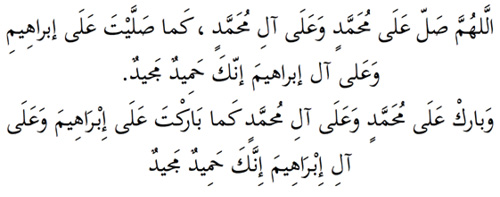

3. Salli, Barik Duaları
Sahabeden biri Allah Rasulüne; “Sana nasıl salat ve selam okumalıyız?” diye sorunca Efendimiz aşağıdaki cümleleri öğretmiştir. Namaz kılan selam vereceği oturuşta Tahiyattan sonra bunları okur:

Okunuşu: Allahümme salli alâ Muhammedin ve alâ âli-Muhammed. Kema salleyte alâ-İbrahîme ve alâ-âli-İbrahime in-neke Hamîdün Mecîd.
Ve bârik alâ Muhammedin ve alâ âli-Muhammed. Kema bârakte alâ-İbrahîme ve alâ-âli-İbrahime inneke Hamîdün Mecîd.
Anlamı: “Allahım, Muhammed’e ve onun ehlibeytine salât/ rahmet eyle. Tıpkı İbrahim’e ve onun ehlibeytine yaptığın gibi. Sen Hamîd’sin, sen Mecîd’sin.
“Allahım, Muhammed’e ve onun ehlibeytine bereket ver. Tıpkı İbrahim’e ve onun ehlibeytine verdiğin gibi. Sen Hamîd’sin, sen Mecîd’sin.
Hamîd, her ürlü hamde ve övgüye layık olan, Mecîd ise her türlü şeref ve yüceliğe sahip olan demektir. Bu iki kelime Allah’ın isimlerindendir.
Salli, barik dualarını selam vereceği oturuşlarda okuması, Hanefîlere göre sünnettir, okunmasa da namaz tamam olur, ama terkedilmesi kötü bir tembelliktir. Şafiîlere göre ise bunları okumayan namazını iade etmelidir. Bu da işin önemini gösterir.